Shaarim24 / README.md
Minimalist Neofetch Spec


Shaarim Alam
Fullstack Developer · Systems Enthusiast · Creative Coder
Conforms strictly to the minimal side-by-side terminal format • Pushed to Shaarim24/Shaarim24